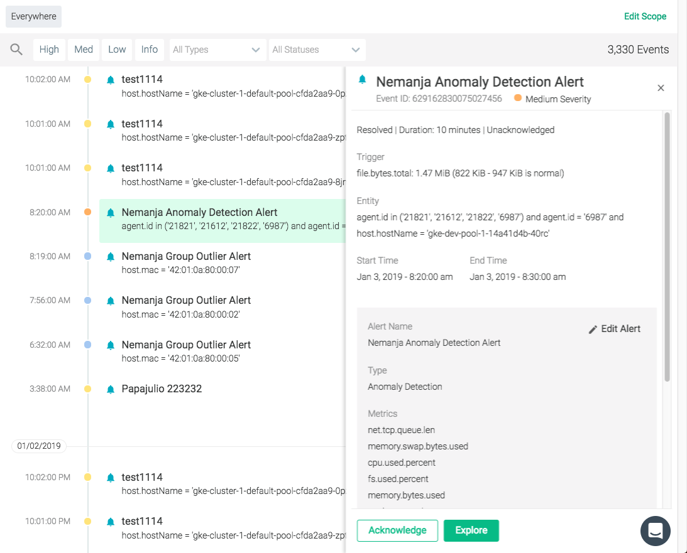
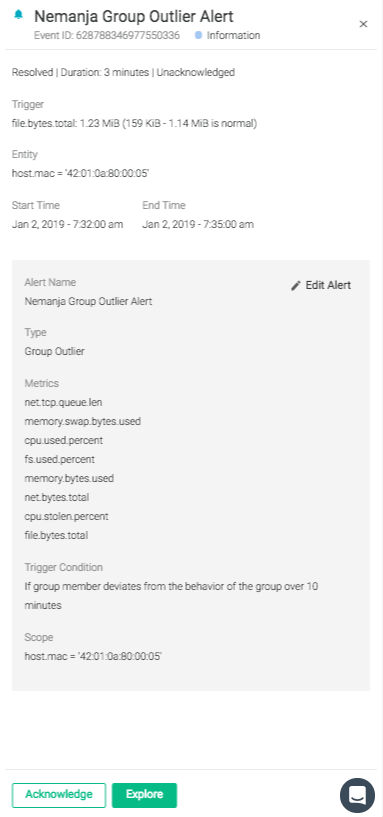
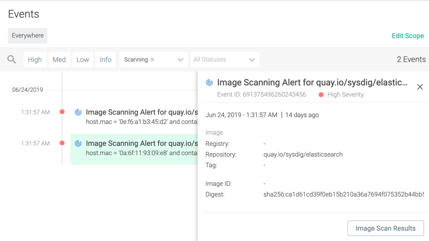
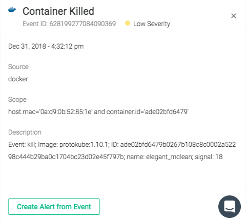

Review Events
Events can be reviewed in detail by clicking on the event listing in the feed:
|  |
To review the environment at the time of the event in detail, click the Explore button to navigate to the Explore module. The Explore module will automatically drill-down to the impacted environment objects.
The Event Details Panel
The Event Details panel contains detailed information about the event. This information is different, depending on whether the event is an Alert event or a Custom event.
Alert Events
The example below is of an Alert event:
|  |
Metadata | Description |
|---|---|
Event ID | The unique ID of the event. |
Severity | The severity of the event (High, Medium, Low, Info). |
State | The current state of the event (Triggered, Resolved) |
Duration | The length of time the event lasted. |
Acknowledged | Whether the event has been acknowledged or not. |
Trigger | The cause of the event (for example, the metric that exceeded the defined range, and the value it reached). |
Entity | The entity on which the event occurred. |
Start Time | The date and time the event started. |
End Time | The date and time the event ended. |
Alert Name | The name of the alert that was triggered. |
Type | The type of alert. |
Metrics | The metric/s that were affected. |
Trigger Condition | The condition that was met to trigger the alert. |
Scope | The scope of the alert. |
Segment | The segmentation applied to the alert. |
Note
To configure the alert that created the event, click the Edit Alert link in the Event Details panel. For more information about alerts, refer to the Alerts documentation.
Security Events
Policy
The example shows an event notifying potentially unauthorized terminal shell in a container. For more information on Policy alerts, see Policy Events Details.
 |
Metadata | Description |
|---|---|
Event ID | The unique ID of the event. |
Severity | The severity of the event (High, Medium, Low, Info). |
Date / Time | The date and time the event occurred. |
Host | The hostname and physical address (MAC) |
Container | The container name, unique identifier, and image. |
Summary | A detailed description of what occurred. |
Scanning
The example is a high severity event alerting a change in the scan result of an elasticsearch image on Quay. For more information on Scanning, see Scanning Alerts.
|  |
Metadata | Description |
|---|---|
Event ID | The unique ID of the event. |
Severity | The severity of the event (High, Medium, Low, Info). |
Date / Time | The date and time the event occurred. |
Image Registry | The repository where the image resides (for example, Quay). |
Tag | The image name associated with the image. |
Image ID | The unique identifier of the image. |
Digest | A content-addressable identifier which contains the SHA256 hash of the image's JSON configuration object. |
Infrastructure and Custom Events
Infrastructure and custom events display the same set of information in the Event Details panel. The example below is a Docker event:
|  |
Metadata | Description |
|---|---|
Event ID | The unique ID of the event. |
Severity | The severity of the event (High, Medium, Low, Info). |
Date / Time | The date and time the event occurred. |
Source | The source of the event (for example, Docker). |
Scope | The scope of the event. |
Description | A detailed description of what occurred. |